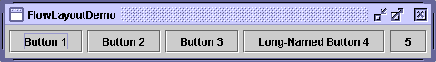

Feedback Form
|
|
Start of Tutorial > Start of Trail > Start of Lesson |
Search
Feedback Form |
TheFlowLayoutclass provides a very simple layout manager that is used, by default, by
JPanels. Here's a picture of an example that uses a flow layout:
 You can run FlowLayoutDemo using JavaTM Web Start
. Its code is in
FlowLayoutDemo.java.
FlowLayoutputs components in a row, sized at their preferred size. If the horizontal space in the container is too small to put all the components in one row,FlowLayoutuses multiple rows. If the container is wider than necessary for a row of components, the row is, by default, centered horizontally within the container. You can specify that it stick to the left or right side instead by using aFlowLayoutconstructor that takes an alignment argument. You can also specify how much vertical or horizontal padding is put around the components.Below is the code from
FlowLayoutDemo.javathat creates theFlowLayoutand the components it manages.contentPane.setLayout(new FlowLayout()); contentPane.add(new JButton("Button 1")); contentPane.add(new JButton("Button 2")); contentPane.add(new JButton("Button 3")); contentPane.add(new JButton("Long-Named Button 4")); contentPane.add(new JButton("5"));
[PENDING: This section will be converted to use API tables, as in the components section.]The
FlowLayoutclass has three constructors:Thepublic FlowLayout() public FlowLayout(int alignment) public FlowLayout(int alignment, int horizontalGap, int verticalGap)alignmentargument can beFlowLayout.LEADING,FlowLayout.CENTER, orFlowLayout.TRAILING. When theFlowLayoutcontrols a container with a left-to-right component orientation (the default),LEADINGspecifies that the components be left-aligned andTRAILINGspecifies right alignment. ThehorizontalGapandverticalGaparguments specify the number of pixels to put between components. If you don't specify a gap value,FlowLayoutuses5for the default gap value.
The following table lists some of the examples that use flow layout.
Example Where Described Notes FlowLayoutDemoThis page Sets up a content pane to use FlowLayout. If you set theRIGHT_TO_LEFTconstant totrueand recompile, you can see howFlowLayouthandles a container that has a right-to-left component orientation.CardLayoutDemoHow to Use CardLayout To center a component nicely in the top part of a BorderLayout, puts the component in aJPanelthat uses aFlowLayout.ButtonDemoHow to Use Buttons, Check Boxes, and Radio Buttons Uses the default FlowLayoutof aJPanel.TextInputDemoHow to Use Formatted Text Fields Uses a panel with a right-aligned FlowLayoutto present two buttons.
|
|
Start of Tutorial > Start of Trail > Start of Lesson |
Search
Feedback Form |
Copyright 1995-2004 Sun Microsystems, Inc. All rights reserved.